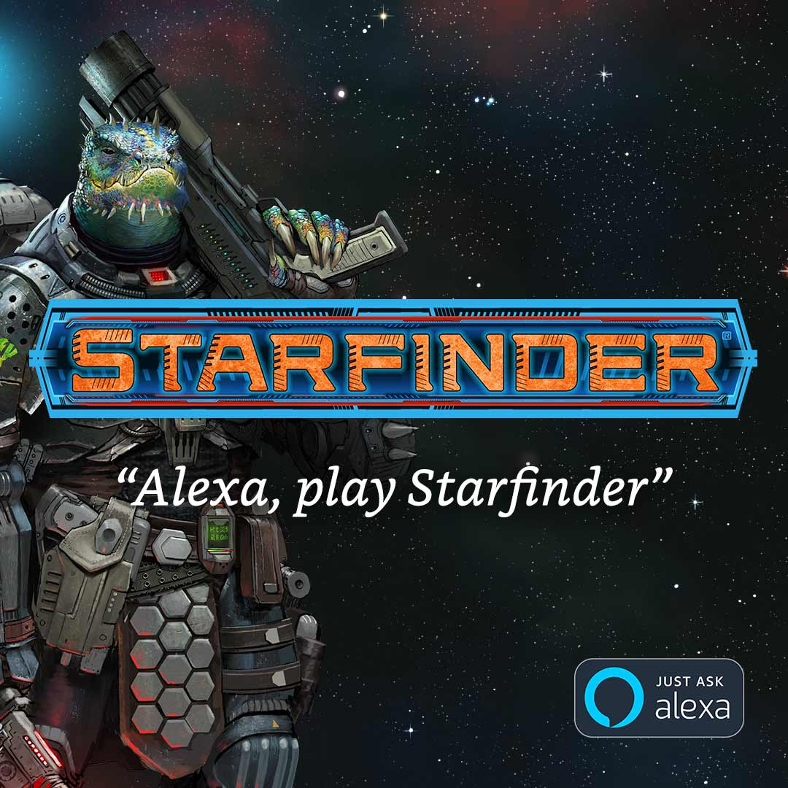
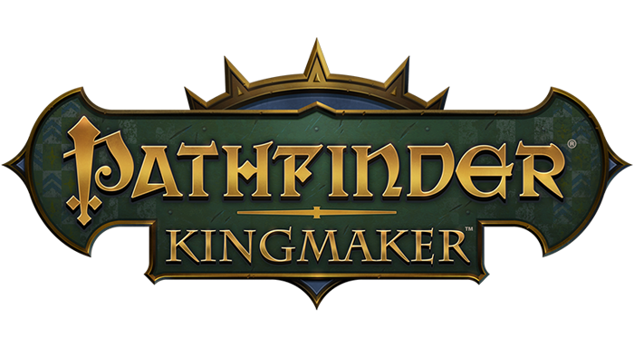
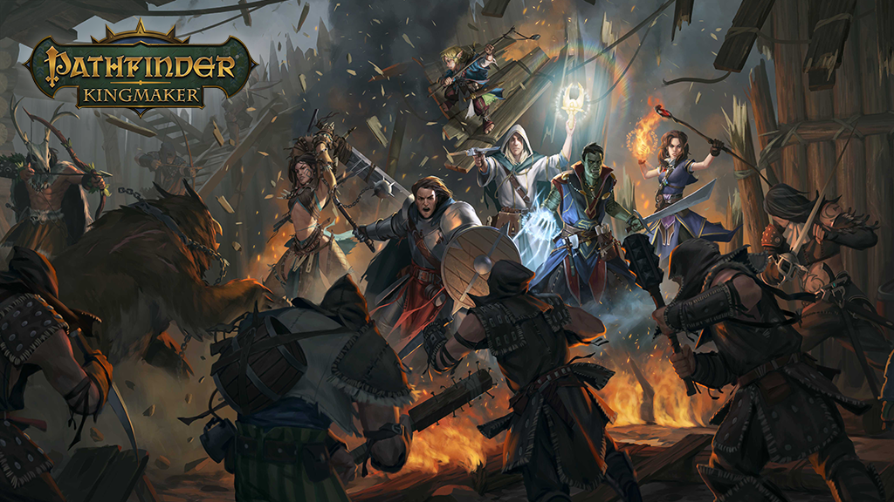
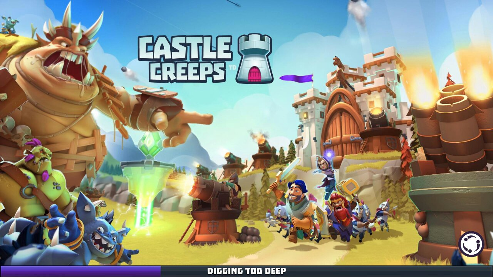

Video Games

Starfinder Alexa
Amazon.com 2019, Lead Writer/Narrative Designer
A first-of-its-kind series of solo audio adventures for the Starfinder RPG, produced by Amazon's Alexa Games Team and based on the Starfinder Beginner Box and
Starfinder Adventure Path #1: Incident at Absalom Station. More robust than a choose-your-own-adventure story, this single-player RPG series offers players a choice of characters that grow with experience over multiple episodes, gaining items, engaging in combat, and more.

Pathfinder: Kingmaker
Owlcat Games 2018, Writer
The classic Kingmaker Adventure Path comes to life as a single-player RPG, spearheaded by legendary video game writer Chris Avellone!

Castle Creeps Battle
Outplay Entertainment 2018, Writer/Creative Consultant
A PVP evolution of the original Castle Creeps Tower Defense! Choose a champion, build a deck, and face off against your opponent in a variety of fantastical locations. Free to play on both iOS and Android.
Castle Creeps Tower Defense
Outplay Entertainment 2017, Lead Writer
Winner of the 2017 TIGA Award for Best Strategy Game! A mobile tower defense game in which you defend the Allied Colonies from a horde of deadly (and sometimes ridiculous) monsters in series of classic fantasy settings. In addition to building towers, you also control a variety of unique heroes with their own particular powers and personalities. Free to play on both iOS and Android.
